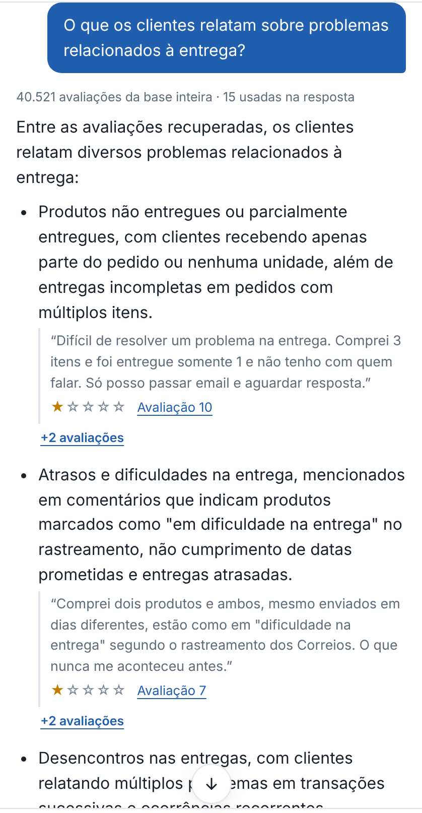
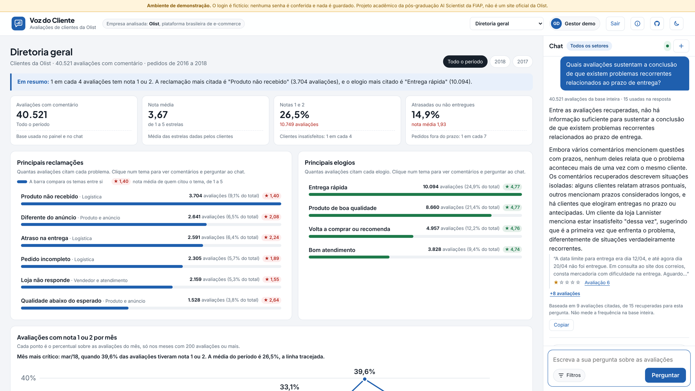
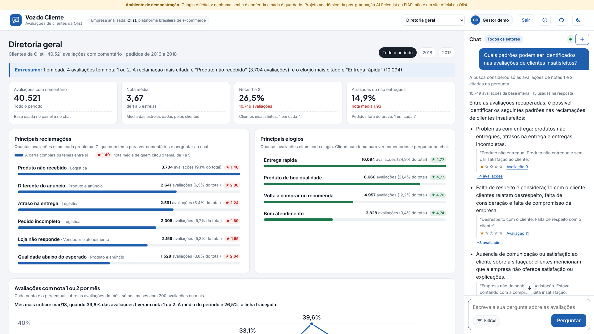
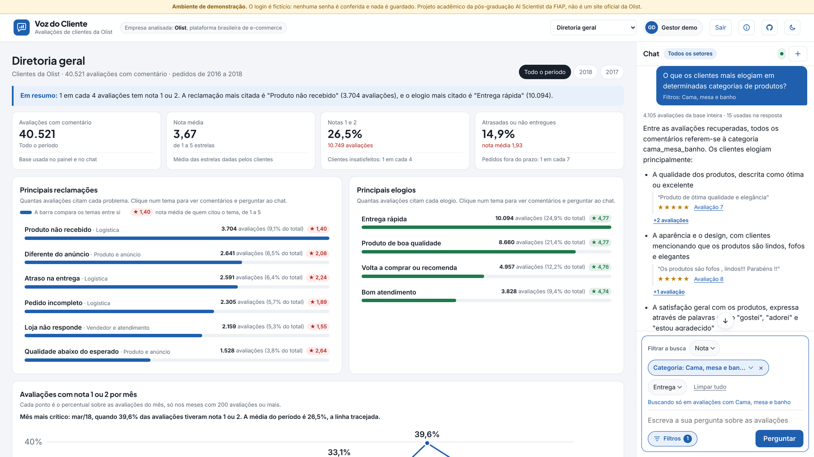
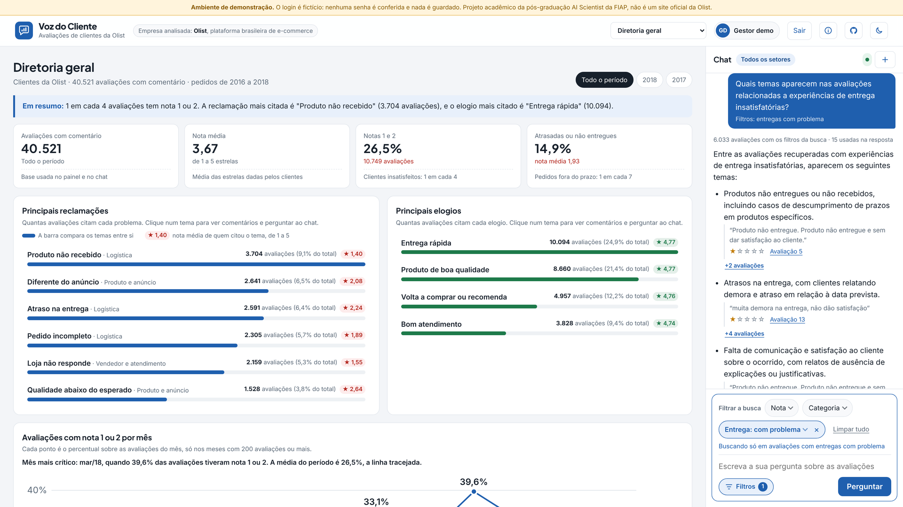
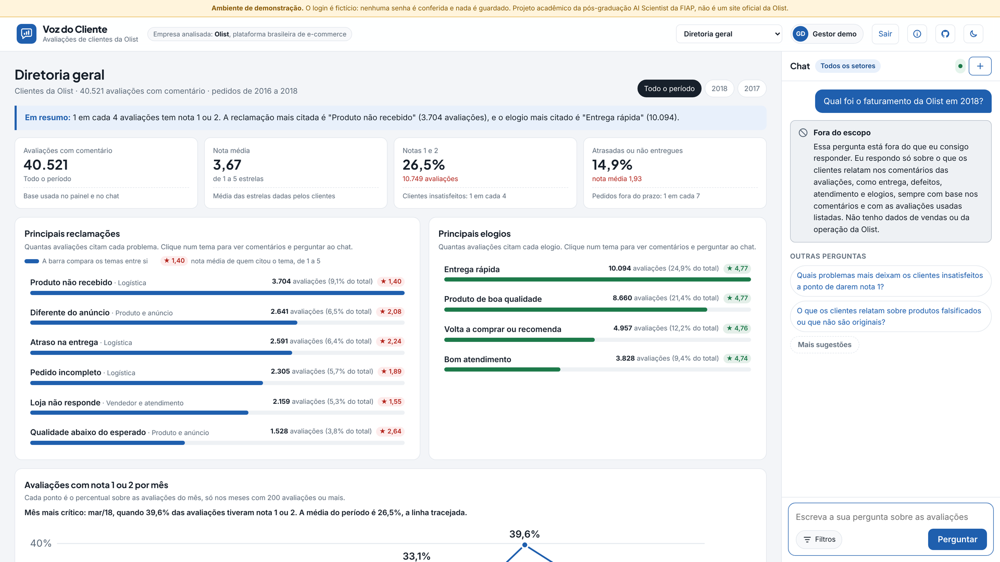

TECH CHALLENGE · FASE 4
Voz do Cliente
Um RAG sobre as avaliações da Olist. Ele responde com base no que os clientes escreveram e avisa quando não sabe.
Tuany Fortunato
Pós-graduação AI Scientist · FIAP
O PROBLEMA
A nota diz se o cliente ficou satisfeito. O comentário diz por quê.
99.224
avaliações na base da Olist, de 2016 a 2018
40.977
têm comentário escrito. Ninguém consegue ler tudo isso.
O que o gestor quer saber
O que mais incomoda, o que mais agrada e se o problema é do vendedor ou da entrega.
Por que um LLM sozinho não resolve
Ele responde algo plausível, mas inventado. Uma resposta convincente e sem base leva o gestor a decidir errado.
A SOLUÇÃO
Da dor de não saber por que o cliente reclama veio a solução

A dor
Os gestores não tinham como ler 40 mil comentários para descobrir o que incomoda o cliente.
A ideia
Um chat em que eles perguntam o que precisam saber, do jeito deles.
A resposta
Ela vem das próprias avaliações, e cada frase mostra os comentários que a sustentam. Quando a base não tem como responder, o chat avisa em vez de inventar. Ao lado, um painel mostra os temas que mais aparecem em cada setor.
BASE DE CONHECIMENTO · O QUE FOI FEITO ANTES DE TUDO
Cada comentário vira um documento
99.224
avaliações
40.977
com comentário
40.521
documentos, sem os comentários vazios
| Etapa | O que fiz | Por quê |
|---|---|---|
| Seleção | Juntei avaliações, pedidos e produtos | Assim cada avaliação ganha categoria e entrega |
| Limpeza | Limpeza mínima, sem tirar palavras | Tirar um “não” inverteria a reclamação |
| Valores ausentes | Nenhum campo fica vazio | Um campo vazio quebraria os filtros |
| Documentos | Título e comentário, juntos e inteiros | Os comentários são curtos, não precisa dividir |
| Embeddings | Cohere, que entende português | Indexa em 25 minutos. O Titan levaria 11 horas |
| Indexação | Vetores no PostgreSQL, com pgvector | Acha os comentários mais parecidos com a pergunta |
Embedding é uma lista de 1.024 números que representa o sentido do texto. Comentários com sentido parecido ganham números parecidos. É isso que permite buscar por sentido, e não só por palavra igual.
PIPELINE RAG · O QUE ACONTECE QUANDO O GESTOR PERGUNTA
Cinco etapas entre a pergunta e a resposta
1
Entender a pergunta
O Nova Micro limpa a pergunta e identifica as notas pedidas.
No exemplo: o assunto vira “problemas na entrega”, e “insatisfeitos” vira filtro de notas 1 e 2.
2
Buscar
O Cohere transforma a pergunta em vetor, e o banco traz os 40 comentários mais parecidos.
No exemplo: 40 comentários sobre entrega, todos com nota 1 ou 2.
3
Selecionar
Descarto os comentários pouco parecidos e escolho 15 variados.
No exemplo: 15 comentários, sem repetir a mesma queixa.
4
Montar o contexto
Os 15 comentários vão numerados, com a nota e a categoria.
No exemplo: o modelo recebe a pergunta e os comentários de [1] a [15].
5
Responder
O Haiku 4.5 escreve citando os comentários, e o código confere cada citação.
No exemplo: cada frase da resposta traz o trecho e o link da avaliação.
Pergunta do exemplo: “O que os clientes insatisfeitos falam da entrega?”
É o fluxo do enunciado, com duas etapas a mais: o corte dos comentários pouco parecidos e a escolha de comentários variados.
ETAPAS 1 A 3 · ENTENDER, BUSCAR E SELECIONAR
Achar os comentários certos e descartar os fracos
Busca pelo assunto
A busca usa só o assunto da pergunta, e “clientes insatisfeitos” vira um filtro de notas 1 e 2. Isso trouxe comentários mais certeiros em 8 de 9 perguntas.
Busca por sentido
“Não chegou” e “até hoje espero” são encontrados juntos, mesmo sem nenhuma palavra em comum.
Corte e variedade
Comentários com semelhança abaixo de 0,58 saem. Depois, o MMR escolhe comentários variados, para não trazer 15 vezes a mesma reclamação.
Se nenhum comentário passa do corte, o chat avisa que não tem evidência, sem chamar o modelo.
Semelhança é um número de 0 a 1 que diz o quanto o comentário se parece com a pergunta. Na calibração, a pergunta sobre Pix, que a base não responde, ficou em 0,57. As perguntas com resposta ficaram acima de 0,62. Por isso o corte fica em 0,58.
MMR escolhe os comentários um a um. A cada escolha, prefere o que é parecido com a pergunta, mas diferente dos que já foram escolhidos.
ETAPAS 4 E 5 · MONTAR O CONTEXTO E RESPONDER
O modelo responde citando comentários reais
Com os 15 comentários escolhidos, o sistema monta o que o modelo vai ler, o modelo escreve a resposta e o código confere cada citação.
[1] (avaliação <id>, nota 1, categoria cama_mesa_banho) texto original do cliente
É assim que cada comentário chega ao modelo. O número [1] é o que a resposta cita.
Contexto
- O modelo recebe só a pergunta e os 15 comentários.
- Cada comentário tem um número, e cada frase da resposta aponta para ele.
Geração
- O Haiku 4.5 cita um comentário em cada afirmação.
- Ele só chama um problema de recorrente se o comentário disser isso.
Checagem no código
- O código apaga citações que não existem e suaviza exageros.
- Ele também classifica a resposta: respondida, evidência fraca ou sem evidência. A página mostra um aviso para cada caso.

DESAFIO ADICIONAL · METADADOS DA AVALIAÇÃO
Nota, categoria e entrega viram filtros da busca
Além do texto, cada avaliação tem informações como a nota e a categoria. Aqui mostro quais delas uso, como entram na busca e o que isso melhora.
| Metadado | Usa? | Como entra |
|---|---|---|
| Nota | Sim | Filtro de 1 a 5. “Clientes insatisfeitos” vira notas 1 e 2 |
| Categoria | Sim | Filtro com as 73 categorias de produto |
| Entrega | Sim | No prazo, atrasada, não entregue ou com problema |
| Pedido | Em parte | Dele saem a situação da entrega e a categoria |
| Período | Só no painel | O painel mostra mês a mês. O chat busca em todo o período |
Por que ajuda: “nota baixa” e “cama, mesa e banho” não aparecem no texto do comentário. Sem filtro, a busca acha comentários parecidos, mas de outras notas e categorias.
15/15
Nas três perguntas de metadados do enunciado, com filtro os 15 comentários estão no recorte pedido. Sem filtro, só 9, 8 e 12 de 15.
ARQUITETURA · ONDE TUDO RODA
Tudo roda na nuvem da AWS
O caminho de uma pergunta, do navegador do gestor até a resposta:
- Site: o gestor abre a página, que fica guardada na AWS.
- API: a pergunta vai para o programa que faz as cinco etapas.
- Banco de dados: guarda os 40 mil comentários e acha os mais parecidos.
- Bedrock: é onde ficam os modelos de IA que entendem e respondem.
- Antes de tudo: o GitHub Actions carregou a base do Kaggle no banco.
- Custo: fica ligado só das 9h às 22h, com limite de perguntas.

CI/CD · DO CÓDIGO AO SITE
O código vai para o site sozinho
O caminho de uma mudança, do código até o site no ar:
- Mudança: cada alteração é feita numa branch separada.
- Revisão: entra por pull request, primeiro na develop e depois na main.
- Testes: a cada mudança, os testes rodam sozinhos, sem acessar a AWS.
- Publicação: quando entra na main, a infraestrutura é atualizada e o site é publicado sozinho.
- Segurança: o GitHub entra na AWS com uma permissão temporária, sem senha guardada.

AVALIAÇÃO · DOIS MODELOS COMPARADOS COM RAGAS
Notas quase iguais, respostas bem diferentes
Para escolher o modelo que escreve a resposta, testei dois com as mesmas 11 perguntas. Um terceiro modelo, o Nova Pro, deu as notas de 0 a 1.
| Modelo da resposta | Fiel aos comentários faithfulness | Responde à pergunta relevancy | Busca útil precision | Situação certa avisou quando devia |
|---|---|---|---|---|
| Claude Haiku 4.5 (escolhido) | 0,975 | 0,560 | 0,736 | 10 de 11 |
| Nova Micro | 0,992 | 0,552 | 0,675 | 10 de 11 |
O caso que decidiu
Na pergunta sobre atrasos recorrentes, o Nova disse que eram recorrentes e ganhou nota. O Haiku recusou, porque nenhum comentário dizia isso, e ficou com zero.
Por que o Haiku
Com notas quase iguais, decidi lendo as respostas. O Haiku não afirma o que os comentários não dizem, mesmo quando isso custa nota.
DESAFIOS E DECISÕES
O que deu trabalho, o que decidi e o que ficou de fora
Os problemas que encontrei no caminho, as escolhas técnicas mais importantes e o que a solução ainda não faz.
O que deu trabalho
- Pix: o corte sozinho não bastou para uma pergunta que a base não cobre. Uma regra no prompt faz o chat dizer que não sabe.
- “Recorrente”: uma resposta chamou de recorrente um problema que o cliente dizia ser “a primeira vez”. Virou regra no prompt e checagem no código.
- Métrica: o RAGAS deu notas quase iguais para respostas de qualidade bem diferente. Precisei ler as respostas.
O que decidi
- Banco próprio com pgvector, em vez do Knowledge Bases, para controlar a busca
- Cohere em vez do Titan: 25 minutos de indexação, e não 11 horas
- Um documento por avaliação, sem dividir o texto
- Corte de 0,58 e comentários variados, para não responder sem base
- Um modelo barato entende a pergunta, outro mais forte responde
O que ficou de fora
- O chat descreve 15 comentários, não a base inteira. Quem mostra a frequência é o painel.
- O chat não filtra por período.
- A base termina em 2018, então assuntos mais novos, como o Pix, não aparecem.
DEMONSTRAÇÃO
Agora, o chat funcionando no site
Vou fazer no site as cinco perguntas do enunciado e mostrar, em cada resposta, os comentários que a sustentam.
Quais são os principais problemas relatados pelos clientes em suas avaliações?
O que os clientes relatam sobre problemas relacionados à entrega?
Quais aspectos da experiência de compra são mais elogiados pelos clientes?
Quais padrões podem ser identificados nas avaliações de clientes insatisfeitos?
Quais avaliações sustentam a conclusão de que existem problemas recorrentes relacionados ao prazo de entrega?
E também
Um filtro: elogios em cama, mesa e banho, com a categoria marcada.
Quando o chat não sabe: pagamento por Pix, que a base não cobre, e o faturamento da Olist em 2018, que avaliações não respondem.
olist-chat.tuanyfortunato.com.br · github.com/tuanyfortunato/olist-voc-intelligence-chat
FIM
Agradeço a atenção
Voz do Cliente: um chat que responde com base no que os clientes da Olist escreveram, e avisa quando não sabe.
Tuany Fortunato
Pós-graduação AI Scientist · FIAP
olist-chat.tuanyfortunato.com.br · github.com/tuanyfortunato/olist-voc-intelligence-chat
EXEMPLO NO CHAT · Problemas recorrentes de prazo
Este exemplo mostra que o chat não aceita uma conclusão só porque a pergunta já a traz pronta.

O que o print mostra
- A pergunta pede provas de que os atrasos se repetem.
- Os comentários falam de atraso, mas nenhum diz que aconteceu mais de uma vez.
- Por isso a resposta diz que não há informação suficiente e trata os casos como isolados.
- No fim, o aviso: 9 avaliações citadas, de 15 recuperadas.
EXEMPLO NO CHAT · Clientes insatisfeitos
Este exemplo mostra o chat transformando uma palavra da pergunta em filtro, sem o gestor marcar nada.

O que o print mostra
- A pergunta fala de clientes insatisfeitos.
- O chat entende isso como notas 1 e 2 e avisa que buscou só nelas: 10.749 avaliações.
- Cada padrão encontrado (entrega, falta de respeito, falta de comunicação) vem com o trecho e o link da avaliação.
EXEMPLO NO CHAT · Elogios em cama, mesa e banho
Este exemplo mostra o filtro de categoria, marcado pelo gestor antes de perguntar.

O que o print mostra
- O gestor marcou a categoria Cama, mesa e banho.
- A busca fica só nessa categoria: 4.105 avaliações.
- Os elogios (qualidade, aparência, satisfação geral) vêm de avaliações com nota 5, cada uma com o link.
EXEMPLO NO CHAT · Entregas com problema
Este exemplo mostra o filtro de entrega, que junta pedidos atrasados e não entregues.

O que o print mostra
- O gestor marcou “Entrega: com problema”.
- A busca fica em 6.033 avaliações de pedidos atrasados ou não entregues.
- Os temas (produto não recebido, atraso, falta de comunicação) vêm com o comentário que sustenta cada um.
EXEMPLO NO CHAT · Quando a base não tem a resposta
Este exemplo mostra o chat dizendo que não sabe, em vez de inventar.

O que o print mostra
- A pergunta é sobre pagamento com Pix.
- Nenhum comentário passou do corte de semelhança, porque o Pix não existia na época da base.
- O chat responde “Sem evidência” e sugere perguntas que a base consegue responder.
EXEMPLO NO CHAT · Quando a pergunta foge do assunto
Este exemplo mostra o chat reconhecendo uma pergunta que avaliações de clientes não respondem.

O que o print mostra
- A pergunta é sobre o faturamento da Olist em 2018.
- O chat responde “Fora do escopo”: ele só fala do que os clientes contam, e não tem dados de vendas.
- A recusa acontece na primeira etapa, antes da busca e sem chamar o modelo da resposta.